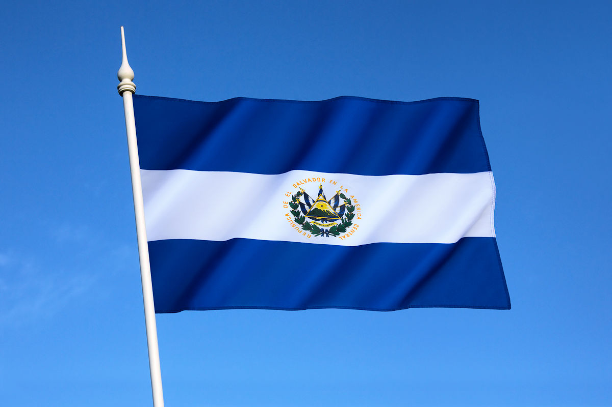
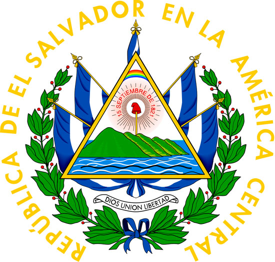
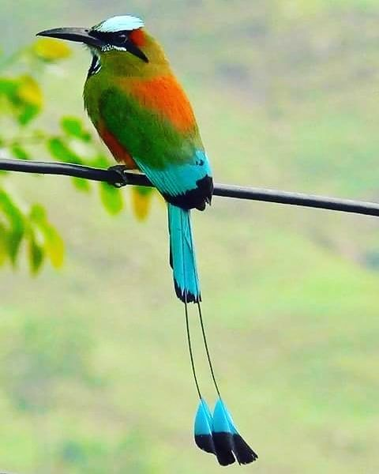
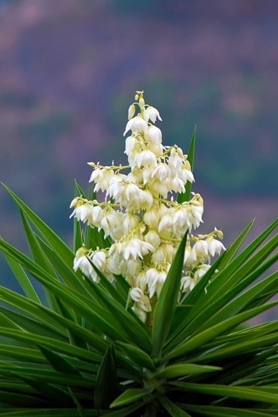

Simbolos Patrios
Arbol Nacional
Ave Nacional (torogoz)
Bandera

Escudo

Flor Nacional (de izote)
Himno Nacional.
Oración a la Bandera.
Comida típica (pupusas)
Árbol Nacional (maquilishuat y bálsamo)

El Torogoz es el Ave Nacional de El Salvador
La flor de Izote fue reconocida oficialmente como “Flor Nacional de El Salvador”, por la Asamblea Legislativa, el 21 de diciembre de 1995.
El Himno Nacional de El Salvador fue compuesto por el general salvadoreño Juan José Cañas y el músico italiano Juan Aberle, el cual fue estrenado formalmente el 15 de septiembre de 1879, para ser adoptado legalmente por la Asamblea Legislativa como himno nacional de la República de El Salvador el 13 de noviembre de 1953.
«ORACIÓN A LA BANDERA SALVADOREÑA» Dios te salve, Patria Sagrada, en tu seno hemos nacido y amado; eres el aire que respiramos, la tierra que nos sustenta, la familia que amamos, la libertad que nos defiende, la religión que nos consuela. Tú tienes nuestros hogares queridos, fértiles campiñas, ríos majestuosos, soberbios volcanes, apacibles lagos, cielos de púrpura y oro. En tus campos ondulan doradas espigas, en tus talleres vibran los motores, chisporrotean los yunques, surgen las bellezas del arte. Patria, en tu lengua armoniosa pedimos a la Providencia que te ampare, que abra nuestra alma al resplandor del cielo, grabe en ella dulce afecto al Maestro y a la Escuela y nos infunda tu santo amor. Patria, tu historia, blasón de héroes y mártires, reseña virtudes y anhelos; tú reverencias el Acta que consagró la soberanía nacional y marcas la senda florida en que la Justicia y la Libertad nos llevan hacia Dios. ¡Bandera de la Patria, símbolo sagrado de El Salvador, te saludan reverentes las nuevas generaciones! Para ti el sol vivificante de nuestras glorias, los himnos del patriotismo, los laureles de los héroes. Para ti el respeto de los pueblos y la corona de amor que hoy ceñimos a tus inmortales sienes.
La pupusa es una tortilla gruesa a base de masa de maíz o de arroz rellena con uno o más ingredientes, como queso, chicharrón, ayote, frijoles refritos, loroco, etc.1 Por su tradición, versatilidad y bajo costo, es una de las comidas más difundidas en El Salvador

Historia de El Salavador
Extension Territorial
Departamentos
Ahuachapn
Santa Ana
Sonsonate
Chalatenango
La Libertad
San Salvador
Cuscatlan
La Paz
Cabañas
San vicente
Usulutan
San Miguel
Morazan
La Union
Lugares Turisticos mas importantes
El lago de Ilopango
Parque Nacional El Boquerón
Playa Las Flores.
Joya de Cerén.
La Puerta del Diablo.
La historia de El Salvador es la narración y estudio cronológico de los acontecimientos demostrables, relacionados con los seres humanos, que han ocurrido en el actual territorio de El Salvador, país de América Central que ha pasado por diversas épocas y periodos, que han marcado su actual estado económico, político y social.
Antes de la llegada de los conquistadores españoles a América, el territorio se encontraba habitado por diversos pueblos originarios que ya habían formado órdenes sociales sofisticadas. Con el sincretismo y la conquista se iría conformando la Alcaldía mayor de San Salvador (que en 1786 pasaría a ser intendencia y en 1821 provincia) y la Alcaldía mayor de Sonsonate; ambas eran parte de la Capitanía General de Guatemala y del Virreinato de Nueva España, y adquirirían su independencia del Imperio español el 15 de septiembre de 1821. Luego de lo cual, y después de la anexión y guerra contra el Primer Imperio mexicano y de la declaración de la independencia absoluta de Centroamérica el 1 de julio de 1823, ambas pasarían a formar parte de las Provincias Unidas de Centroamérica, donde la entonces Provincia de San Salvador y la Alcaldía mayor de Sonsonate se unirían y formarían el Estado del Salvador en 1824 para formar parte de la República Federal de Centro América, como una entidad federativa. El Salvador adquiriría su estatus de república libre e independiente el 25 de enero de 1859, luego de separarse de la Federación Centroamericana en 1841, unión que fue disuelta de facto 2 años antes, en 1839, al haberse separado de esta el resto de estados centroamericanos, quedando solo El Salvador como miembro oficial de ella.
A partir de mediados del siglo xix, El Salvador inicia un lento proceso de consolidación económica y social como nación independiente hasta comenzar la concreción de esta con las reformas liberales entre las décadas de 1870 y 1890. Esta coyuntura inauguraría el período denominado "La república cafetalera", que caracterizaría a la historia salvadoreña al menos hasta la década de 1920. En 1931 se iniciaría un periodo conocido como la "dictadura militar", donde la Fuerza Armada controlaría el gobierno hasta 1979. Durante los años ochenta acontecería la guerra civil, dejando un saldo de muertos y desaparecidos sin precedentes en su historia.
En 1992 se firmarían los Acuerdos de Paz de Chapultepec, que terminarían el conflicto armado y darían inicio a la posguerra; donde la situación económica y social tendería a dificultar las posibilidades de superación de la población, debido al abandono social, delincuencia, corrupción política y la falta de apoyo, en el ámbito económico y social, por parte de los gobiernos en turno. En los 27 años, después de la firma de los Acuerdos de Paz, el gobierno estaría en manos de: Alianza Republicana Nacionalista de El Salvador (ARENA), que estuvo a cargo del estado durante 20 años; y El Frente Farabundo Marti Para la Liberación Nacional (FMLN), durante 10. En el 2019, llegaría a la presidencia Nayib Bukele, bajo la bandera del partido Gana e impulsando el partido de Nuevas Ideas, que se convertiría en la primera fuerza política en las elecciones legislativas y municipales de 2021.
República de El Salvador. Superficie: 21.040 Km2. Límites: Limita al Norte y al Este con Honduras, al Oeste con Guatemala y al Sur con el Océano Pacífico. Al Este, tiene frontera marítima con Nicaragua, en el Golfo de Fonseca, donde posee 9 islas